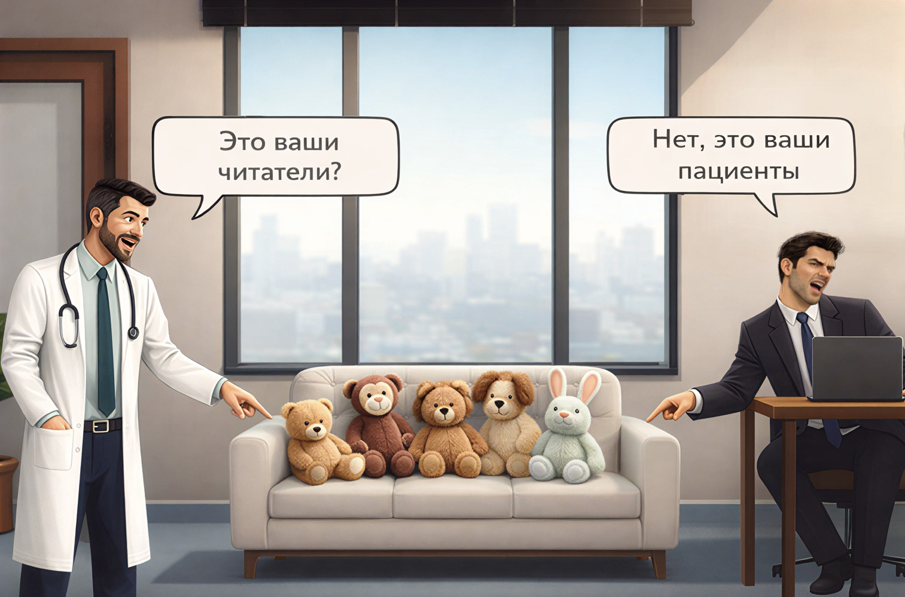
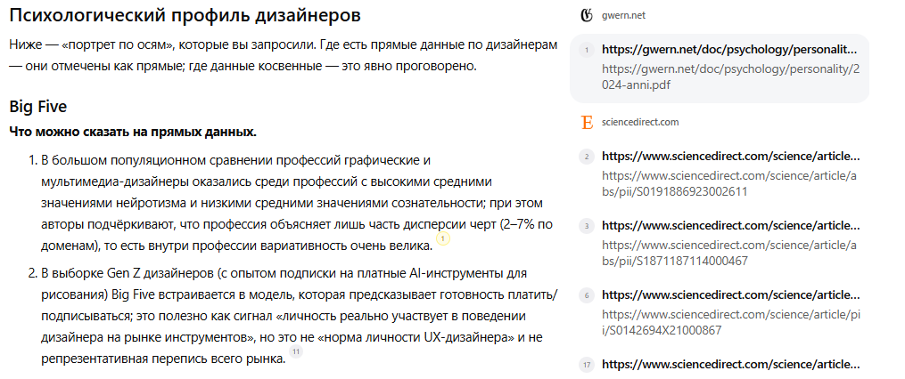

Если копирайтер не психолог, тогда и терапевт не врачЗвучит как вызов, не так ли? Возможно, даже резко — если воспринимать буквально. Но я о другом.
Казалось бы: дипломная работа выпускника школы копимаркетинга Сергея Трубадура. Всего то уровень джуниора — и сразу такой поворот. Логично спросить: с чего вдруг?
Причина проста: копирайтинг — это больше, чем тексты.
Это работа с мотивами и страхами человека. С тем, как он оценивает риски и выгоды. Что побуждает к действию. И всё это — родом из психологии.
Америку я не открыл. Но если посмотреть правде в глаза: копирайтинг по отношению к психологии — как инженер к физике.
Физика открывает законы. Инженер строит по ним мосты. Трудно представить инженера, который не знает физику.
Психология объясняет, как работает сознание. Копирайтинг выстраивает текст так, чтобы это сознание пришло к нужному решению.
Можно ли быть хорошим копирайтером без психологического образования? Уверен, что да.
Достаточно зайти на любую биржу — там сотни авторов без психфака, которые находят болевые точки, подбирают аргументы и ведут читателя к покупке.
Один делает это осознанно. Понимает, за какой мотив можно зацепиться. Видит, где человек сомневается. И выбирает аргумент, который сработает.
Другой действует по шаблонам. Он вроде бы знает, что делать. Но не всегда понимает, почему это работает.
Оба могут привести читателя к целевому действию. Просто у первого меньше промахов. Он видит не только «что сработало», но и за счёт какого триггера, в каком контексте и для какого типа мышления.
Как это работает — покажу на примере. Ниже — фрагмент из моей учебной работы. Раздел СОЦИАЛЬНЫЕ СЕТИ.
61 000 vs 2800 подписчиков: как психоанализ аудитории решает всё
Чтобы показать связь психологии и копирайтинга, я изучил два сообщества в одной нише — курсы по дизайну интерьера.
Задачи у них одинаковые: привлечь аудиторию и продать обучение. А Результаты разные. У одного паблика 2,8 тыс. подписчиков, у другого — 61 тыс.
Конкретные названия пабликов и скриншоты не публикую в открытом доступе из уважения к авторам контента. Если вам интересны подробности анализа с указанием источников — напишите мне.
Кто эти люди: психологический портрет дизайнеров
Прежде чем оценивать контент, я определил целевую аудиторию обоих проектов.
Дизайнеры интерьеров — почти 90 % женщин в возрасте от 24 до 45 лет. Эти цифры взяты из открытых сообществ школ дизайна интерьера.
С точки зрения психологии это люди с ассоциативным, образно-проектным мышлением. Идеи у них рождаются через инсайты и озарения, а не через сухой анализ. Они эмпатичны, чувствительны к своему внутреннему состоянию и уязвимы к стрессу и давлению.

Источники: Design Studies, Scientific Reports, American Psychologist, отраслевые отчёты Figma — 24 работы за 2014–2025 годы. Если интересно изучить подробнее — пишите, поделюсь полным списком и отчётом.
| Если давить на болевые точки, эти люди закрываются и уходят от контакта. Для людей с высоким уровнем сверхконтроля — всё наоборот: указание на боли работает как стимул к действию. |
|---|
Это значит, что перед продажей курса нужно создать дружескую атмосферу — ощущение безопасности и принятия. И только потом ненавязчиво звать к себе на обучение.
Сообщество №1: 2,8 тыс. подписчиков
Контент этого паблика построен на мобилизации и давлении.
В примерах — Маргарет Тэтчер («железная леди»), Вера Вонг — фигуристка, которая в 40 лет стала дизайнером свадебных платьев.
Заголовки постов жёсткие: «Жуткие факты о профессии дизайнера», «Что стоит за успехом женщины», «Дизайнеров стало слишком много», «Нам предрекают крах профессии».
Тон воинственный: про борьбу и преодоление. Визуал — агрессивная, властная подача.
Такой подход работает на рационально-волевых людей. Их можно мотивировать через вызов и конкуренцию.
Но у творческих, ранимых и эмпатичных натур он запускает защитную реакцию — не мобилизацию, а уход в себя.
Результат: 2,8 тыс. подписчиков. Медленный рост и низкая вовлечённость.
Сообщество № 2: 61 тыс. подписчиков
Контент же этого паблика выстроен с учётом психологии. Почти все посты — короткие ролики с лидером и её командой. Тон тёплый, дружелюбный, вдохновляющий.
Визуал — улыбки, уют, ощущение «тебя здесь ждут». В одном из роликов лидер, милая девушка, говорит: «Мы здесь даже худеем!» — и это вызывает улыбку. Мотивация строится не через давление («Ты должна стать успешной!»), а через вовлечение и отклик:
«Ты уже делаешь ремонт? Тебе нравится? Значит, у тебя есть талант. Давай его развивать».
Никаких «жутких фактов» и «железных леди». Только поддержка, безопасность и ощущение: «У тебя всё получится».
Я посмотрел эти ролики и поймал себя на мысли: «Может самому записаться сюда? Хотя я ни разу не дизайнер».
Контент работает настолько мягко, что вовлекает даже тех, кто не относится к целевой аудитории.
Результат: 61 тыс. подписчиков. Высокая вовлечённость, у роликов тысячи просмотров.
Разница в подходах
Оба проекта используют похожие форматы: ролики, посты, статьи. Но один игнорирует психологию аудитории, а другой подстраивает под неё контент.
«Сообщество №1» пытается мотивировать через страх и давление, но дизайнеры от этого закрываются.
Сообщество № 2 создаёт ощущение принятия и безопасности — и дизайнеры идут туда, где их поддержат и поймут.
Разница в 20 раз по количеству подписчиков — это не только про контент. На цифры влияет многое: бюджет на продвижение, время существования паблика, алгоритмы площадки.
Но когда тон и подача расходятся с психологией аудитории, это тоже препятствует росту. И здесь разрыв слишком велик, чтобы списать его только лишь на бюджеты и алгоритмы.
Разница в 20 раз по подписчикам — не случайность. Это говорит о том, что в одном проекте знают, с кем говорят, а в другом — нет.
Копирайтинг & психология: две стороны одной медали
| Этот пример подтверждает главный тезис дипломной работы: если автор опирается на психологию, то у него больше шансов заинтересовать читателя. |
|---|
Психология про то, как человек воспринимает информацию и принимает решения, а копирайтер на этом строит контент.
Получается, что копирайтинг и психология — две стороны одной медали.
Один автор пишет «по шаблону». Другой — под тип мышления, мотивы и страхи аудитории.
Результат виден невооружённым глазом: 61 тыс. подписчиков против 2,8 тыс. И контент, выстроенный с учетом психологии — не единственная причина. Но трудно поверить, что он вообще ни при чём.
Психолог & Копирайтер — Сила
Когда-то я работал в компаниях FMCG (дистрибьюция товаров повседневного спроса) — от регионального представителя до директора дистрибьюторской компании.
Управлял торговыми командами, строил дистрибуцию, вёл переговоры с сетями и собственниками компаний. Но как и в текстах, главным было одно — влиять на решения людей.
Меня обучали техникам продаж, НЛП-технологиям и ведению переговоров на разных уровнях — от товароведов до топ-менеджеров.
И к тому же, за плечами университет, специальность — «Психология». Она то и помогла адаптировать тренинги к работе в «полях». Но не все из них.
Я не использовал суггестивные методы. Эриксоновский гипноз и якоря из НЛП были под жёстким табу. Я понимал, что любая манипуляция сознанием — это отложенная ответственность.
Кто не соблюдает нравственную экологию, тот сильно ошибается. Но тренера об этом любят молчать.
А бизнесу, как правило, вообще всё равно. Главное, чтобы менеджеры за пару дней научились «втюхивать» товар в розницу.
При этом серьёзные психотехники требуют длительной подготовки. Для сравнения: гипнотерапию всерьёз изучают в медицинских вузах — и то на уровне ординатуры.
Поэтому я не лез в дебри. Есть мудрая русская пословица: «Где просто — там ангелов сó сто. Где мудренó — там ни одного».
Мне хватало определить темперамент и ведущие черты характера собеседника. Этого было достаточно, чтобы выстроить диалог. Главное — разобраться в человеке за первые минуты встречи.
Поэтому я работал с двумя уровнями личности, которые легко заметить и которые напрямую влияют на коммуникацию.
Первый уровень - темперамент. Он показывает врождённую динамику реакций. Как человек реагирует: быстро или медленно. Выдерживает ли паузы. Что важнее: эмоции или логика.
Второй уровень — черты характера. Это стратегии поведения: отношение к контролю, риску, неопределенности. Темп речи, паузы, жестикуляция — всё это давало представление о собеседнике.
Такой подход близок к тому, что в психологии называют шкалами MMPI — способам реагирования в разных ситуациях.
К примеру, флегматику-интроверту нужна структура, время на обдумывание и ощущение спокойствия. Если ускорять темп и давить — он замыкается.
Холерик с выраженным сверхконтролем, наоборот, требует динамики и чёткости. Ему важно чувствовать, что процесс под контролем. Любую попытку «вести за руку» он воспринимает как манипуляцию.
Это абсолютно разные люди. При этом вопросы, аргументы и работа с возражениями почти одни и те же.
Просто флегматику нужно дать паузу и возможность всё взвесить. А холерику — лёгкую провокацию и быстрый переход к цифрам и сделке.
И здесь самое время вспомнить БРИФИРОВАНИЕ в школе копимаркетинга «Мануфактура». Это про то, как на старте договориться с заказчиком и снять разночтения ещё до начала работы.
По сути, это всё те же переговоры. Только не про поставки и объёмы, а про смыслы, ожидания и что считать «хорошим результатом».
И опыт работы с темпераментами и характерами здесь не менее важен, чем сам бриф с вопросами.
Сначала есть ТЗ. Затем — бриф, который помогает прояснить ожидания и недосказанности. Но даже после письменных ответов часть смыслов остаётся между строк и проясняется только в живом разговоре.
Если совсем фундаментально, то можно сказать так:
«Сначала было ТЗ. Его не хватало — и тогда родился бриф»
А поговорить?! — Да-да, это про интервью с заказчиком — для того, чтобы:
Сузить задачу
Отсечь лишнее и выделить одну проблему, которую решает текст. Иначе получится «обо всём и ни о чём» — размыто и не цепляет.
Выбрать стратегию
Не «в целом экспертную», а конкретную: объяснить, убедить, сравнить. Стратегия определяет структуру, тон и аргументы. Без неё непонятно: куда вести читателя.
Договориться об ожиданиях
Зафиксировать: что считать успехом, как оценивать материал и где граница между «не нравится» и «не работает». Без этого текст будут править по ощущениям — и правки никогда не закончатся.
Публичное выступление — та же статья-проблема, только вслух
На квартальном совещании я должен был представить отчёт по своему региону. Это было время, когда работал региональным представителем в чайной компании.
Задача была не из лёгких. Нужно было не просто привлечь, а крепко зацепить внимание собственника. Об этом далее.
В зале — собственник и топ-менеджеры: отдела маркетинга, регионального развития, продаж.
Повестка стандартная: динамика продаж, вопросы дистрибуции, комментарии маркетологов. Но в моём регионе ситуация по чаям резко изменилась. И дело не в том, как «дожать продажи». Проблема была глубже — продуктовая линейка перестала отвечать спросу.
Я собрал данные по рынку. Эконом-сегмент терял позиции. Премиум — рос. Это означало простую вещь: люди с невысоким доходом всё чаще выбирали более качественный продукт.
А компания продолжала продвигать дешёвый чай, словно ничего не происходило. По телевизору крутились ролики. Бюджеты сгорали. А эффект нулевой. Как говорят: деньги на ветер.
Казалось, что отдел маркетинга усыпили.
И если ничего не менять, падение позиций компании «не за горами». С точки зрения маркетинга, продуктовый «апгрейд» явно назрел.
Без этого объёмы продаж и показатели дистрибуции удержать было крайне сложно. И это при том, что мой регион был одним из лучших.
Но «разбор полётов на такой высоте» не входил в зону моей ответственности. И всё же я пытался донести проблему линейным топам, но безуспешно. Причина? Не трудно догадаться. Особенно тем, кто работал в крупных компаниях.
И передо мной встал выбор: молча смотреть на стагнацию компании, либо вложить эту проблему в самое сердце. Я о собственнике.
Собственник: психологический портрет
Это лидер с высокой потребностью всё контролировать. Человек, который строил бизнес с нуля и привык быть на шаг впереди.
Для него важно знать то, чего не знают другие. Триггер: информация, которая ставит под сомнение его картину мира.
Страх: упустить изменения на рынке. Реакция: если правильно зацепить — включается на полную.
Обычный отчёт здесь не сработал бы. Босс начал бы зевать, листать телефон или просто ушёл бы до конца презентации.
Нужно было зацепить с первого слайда. Иначе все доводы растворились бы в воздухе.
Прообраз статьи-проблемы
Сейчас, оглядываясь назад, я понимаю: то выступление было прообразом СТАТЬИ-ПРОБЛЕМЫ. Хотя тогда я не знал ни этого термина, ни вообще слова «копирайтинг».
Но получилось по методичке Виктории Закальной — лучшего преподавателя всех времён и народов и всех статейных факультетов!
Цепляющий заголовок, вруб, основная часть и выводы. И даже иллюстрации на слайдах. Обычная статья-проблема — только вслух.
Я готовил презентацию не для зала, а для одного человека. Собственника. Он и был моей целевой аудиторией. И стало быть подачу материала выстраивал с учётом его восприятия.
Все остальные были фоном. Tone of Voice я тоже подобрал, если применять термины из копирайтинга — прямой и уверенный. Босс не терпел осторожности и заискивания. «Вот факты. Делайте выводы». Кратко, по существу, без реверансов.
Стиль лаконичный. Минимум слов, максимум смысла. Босс не любил длинные формулировки. Никаких «очевидны определённые рыночные тенденции» и прочего словесного тумана. Тогда я не знал что это токсичные канцеляриты.
И здесь, в школе копимаркетинга, учат бороться с ними. Нет, не бороться — «выжигать калёным железом» из текста!
Обычный отчёт строится линейно: проблема → цифры → выводы. Он информирует, но не вовлекает.
Я выстроил логику иначе. Первый слайд создавал противоречие — почти абсурд. Второй снимал его и вёл к цифрам, из которых вытекал неизбежный вывод. Вот такая логика повествования: от провокации к доказательству.
Итак, мой выход. Первый слайд: «Конкуренты больше не продают дешевый чай».
И тут началось брожение. Негромкие, но довольно ясные возмущения. Типа, «что он несёт?!» Реакция была ожидаемой. Формулировка резала слух.
Публика по-своему была права: как производители могут не продавать дешевый чай? Всё равно, что супермаркеты больше не продают хлеб. Звучит нелепо, почти вызывающе.
Следующий слайд я намеренно не выводил. Сделал паузу — короткую, но ощутимую. Ждал реакцию собственника. И не ошибся.
Он слегка подался вперёд, не произнёс ни слова, но своим видом дал понять: продолжай. Остальные покорно притихли.
Только тогда я вывел второй слайд и продолжил:
«Конкуренты больше не продают дешёвый чай в тех объёмах, в которых продавали раньше».
Далее шли цифры. Продажи конкурентов по месяцам, ценовым сегментам и каналам сбыта.
Картина однозначная: премиальный продукт рос, а эконом — сдавал.
Я показал, что если закрывать глаза на эту динамику, компания начнёт терять позиции.
Для босса это стало откровением. Он несколько раз переводил взгляд на маркетинг-директора. Без слов, но с явным недоумением.
Подробности опущу. Скажу одно: позже в ассортименте появился премиальный чай, а эконом-линейку сократили.
Тогда я не использовал слова «целевая аудитория», «Tone of Voice» или «логика повествования». Я просто делал то, что казалось логичным.
Разница только в формате: тогда я говорил со сцены, сейчас — через текст.
Итоги: от психологии — к тексту, который работает
До школы копимаркетинга у меня был опыт работы с людьми. Я понимал, как они принимают решения и что за этим стоит, поэтому мог влиять на ход диалога.
Психологическое образование, тренинги в FMCG-компаниях, опыт в продажах и переговорах. Это стало моей профессиональной базой.
Она то и подсветила пробел. Я понимал, как люди реагируют и принимают решения, но не умел превращать это понимание в текст, который работает.
И я всерьёз задумался о копирайтинге. Хотел научиться писать так, чтобы текст работал без моего участия. То есть, чтобы он точно попадал в логику аудитории и вызывал нужную реакцию.
Чтобы текст побуждал к действию так, как это делал я, но в ходе разговора. Тогда и начался поиск курсов.
Я искал инструменты, чтоб дополнить свой бэкграунд. Именно поэтому поступил в «Мануфактуру», где и нашёл что искал. «Мануфактура» — название школы копимаркетинга.
Инопланетяне — тоже целевая аудитория, если писать в космос
Во время переговоров я видел реакцию собеседника и мог менять аргументы прямо в моменте: уточнять, корректировать, возвращаться к проблеме.
Была обратная связь и она давала «пространство для маневра» — как право на ошибку, которую можно тут же исправить.
В копирайтинге такого права нет. Текст работает без автора. Читатель не задаст уточняющий вопрос, не скажет, что ему непонятно, и не даст второй попытки.
Поэтому текст должен попасть в цель сразу: в образ мыслей читателя и логику его решений.
Это те же переговоры, просто собеседники не видят друг друга. И автор должен попасть в «яблочко» с первой попытки.
Механика влияния та же, а требования к точности выше. И здесь психология — не дополнение, а основа. Она объясняет, с кем ты разговариваешь.
А копирайтинг даёт инструменты, чтобы выстроить разговор с помощью текста. Без этого — текст работает вслепую.
В этой логике инопланетяне тоже целевая аудитория, если писать в космос 🚀📝
Что дальше?
Планы есть.
Мой бэкграунд дал главное — я видел бизнес изнутри и знаю, как он работает и на каком языке с ним разговаривать.
«Мануфактура» дала понимание: тексты всегда что-то продают. Не обязательно за деньги — иногда за внимание, и у него тоже есть своя цена.
Так что мне ближе тексты, у которых есть измеримый результат.
Поэтому вижу себя там, где важны цифры, логика : B2B, коммерческие предложения, тексты для FMCG и ритейла, материалы, которые помогают продавать и договариваться.
Но я открыт и к другим направлениям, если там есть логика, цифры и понятный эффект от работы. Поэтому пишу для бизнеса. А бизнес бывает разным.